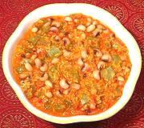

|
Snake Gourd with Black-eye PeasIndia - Konkani - Padwale Randayi | ||||
| Serves: Effort: Sched: DoAhead: |
4 side *** 45 min Yes |
Delicious and satisfying as a side dish or as a light vegetarian main dish served with steamed Basmati rice. This recipe is from the Konkani cuisine, which spans the central western coast from Mumbai south to Kerala. | |||
|
8 1 1-1/2 1 4 1/3 2 7 ar |
oz c c c t pc |
Snake Gourd (1) Black-eye Peas (2) Water Coconut, grated (3) Red Chilis (4) Salt Kokum (5) Sichuan pepper (6) Water, boiling |
Do Ahead (8-1/4 hrs - 5 min work)
|
isv_snake2 100902 - www.clovegarden.com
©Andrew Grygus - agryg@aaxnet.com - Linking to and
non-commercial use of this page is permitted.